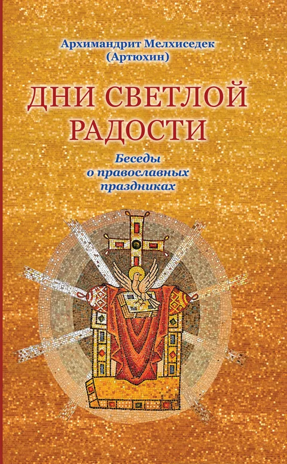
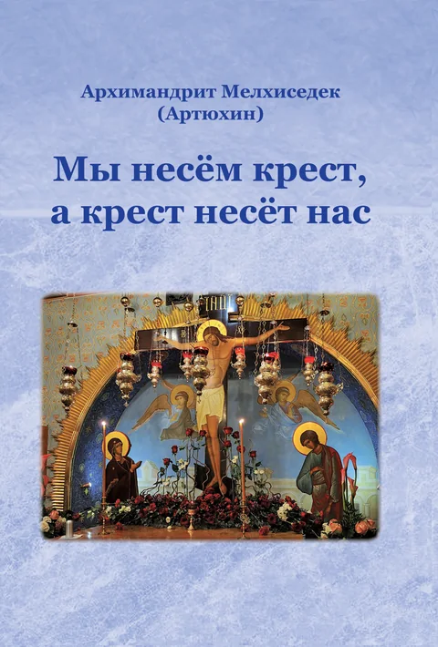
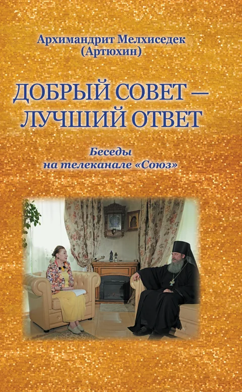
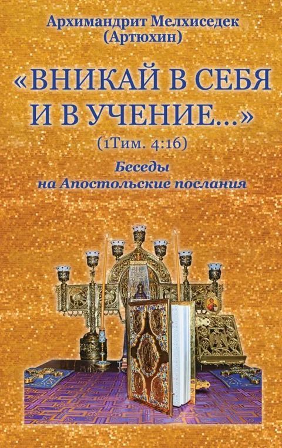
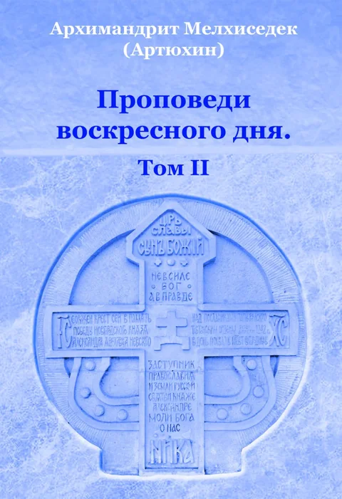
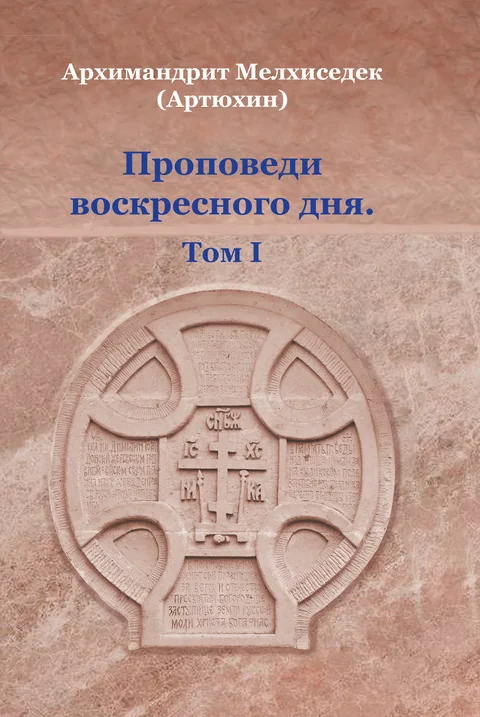
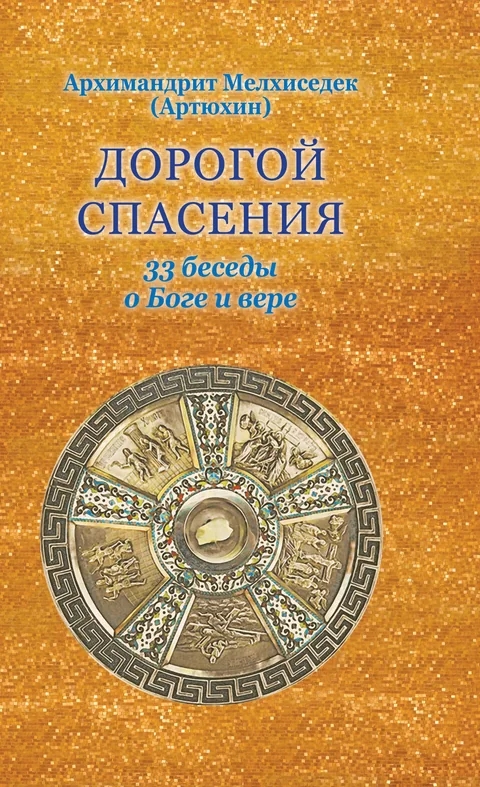
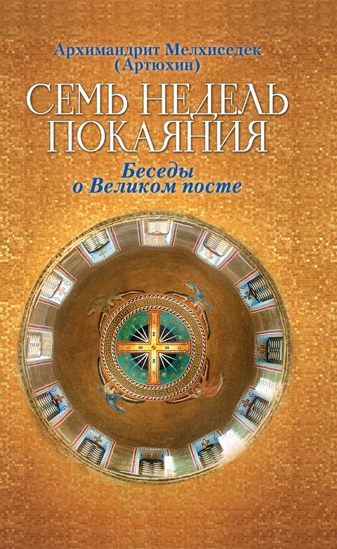
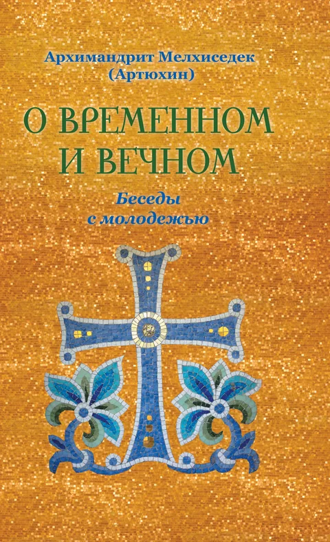

Книги
-

Дни светлой радости Беседы о православных праздниках -

Мы несём крест, а крест несёт нас -

Добрый совет — лучший ответ Беседы на телеканале «Союз» - Молитва — дыхание души
-

«Вникай в себя и в учение…» Беседы на Апостольские послания - Без храма не прожить!
- Алгоритм семейного счастья
- Была такая история…
- Что там, за последней чертой?
-

Проповеди воскресного дня. Том II -

Проповеди воскресного дня. Том I -

Дорогой спасения 33 беседы о Боге и вере -

Семь недель покаяния Беседы о Великом посте -

О временном и вечном Беседы с молодёжью